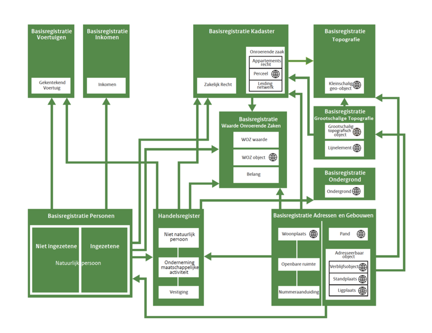
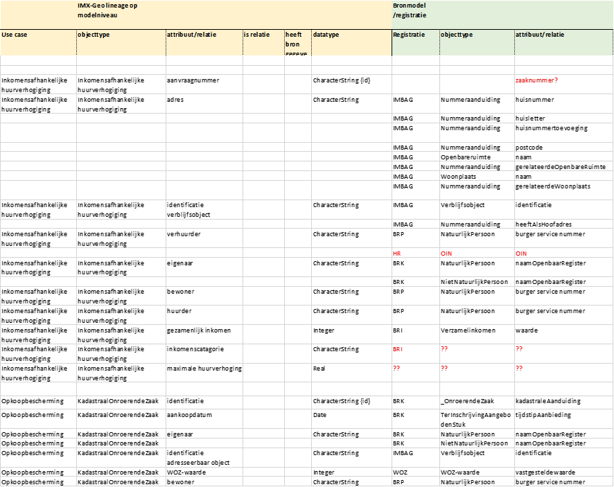

Voor de use cases Inkomenafhankelijke huurverhoging en Opkoopbescherming, worden
de gegevens van de productmodellen omgezet naar de gegevens van de
bronregistraties. Deze conversie gebeurt aan de hand van mappingregels, waardoor
een orkestratie-engine in staat is om de gegevens op te halen uit de
bronregistraties en ze terug te geven in de gewenste structuur van de
productmodellen.
Voor deze use cases worden vooral gegevens gebruikt uit de
basisregistraties.
Voor de use cases Inkomensafhankelijke huurverhoging zijn gegevens nodig uit de
volgende basisregistraties:
Basisregistratie Adressen en Gebouwen (BAG)
Basisregistratie Kadaster (BRK)
Basisregistratie Inkomen (BRI)
Basisregistratie Personen (BRP)
Handelsregister (HR)
Voor de use case Opkoopbescherming zijn gegevens nodig uit de volgende
basisregistraties:
Basisregistratie Kadaster (BRK)
Basisregistratie Adressen en Gebouwen (BAG)
Basisregistratie Waarde Onroerende Zaken (WOZ)
Basisregistratie Personen (BRP)
De gegevens worden aangevuld met specifieke informatie uit dossiers of sectoren,
zoals een zaaknummer of een categorie afkomstig uit een classificatietabel
(bijvoorbeeld een inkomenscategorie).
Onderstaande tabel toont zijn de mappingregels voor het vertalen van gegevens
van de productmodellen naar de bronregistraties voor de use cases
Inkomenafhankelijke huurverhoging en Opkoopbescherming. Je kunt de spreadsheet
hier
downloaden.
